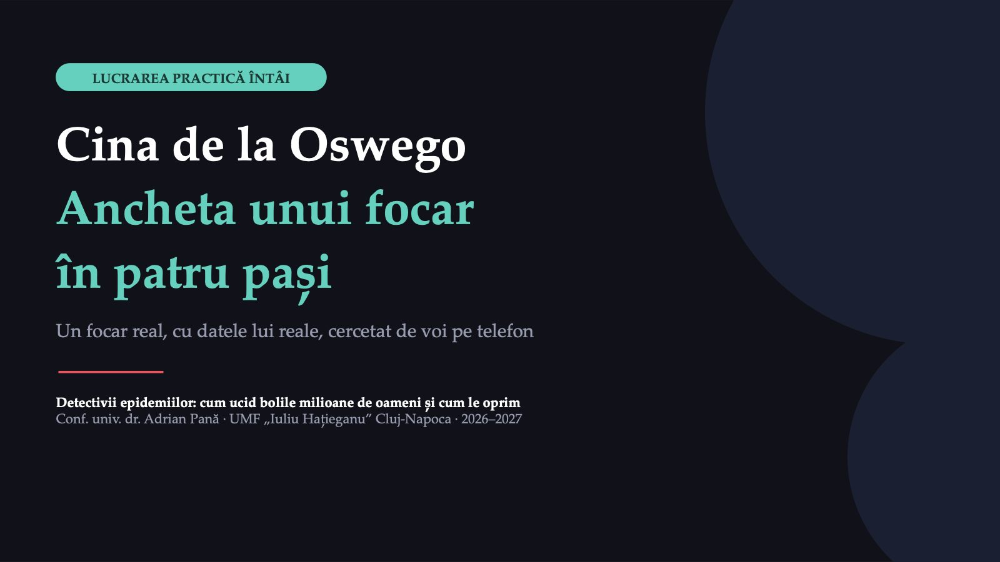
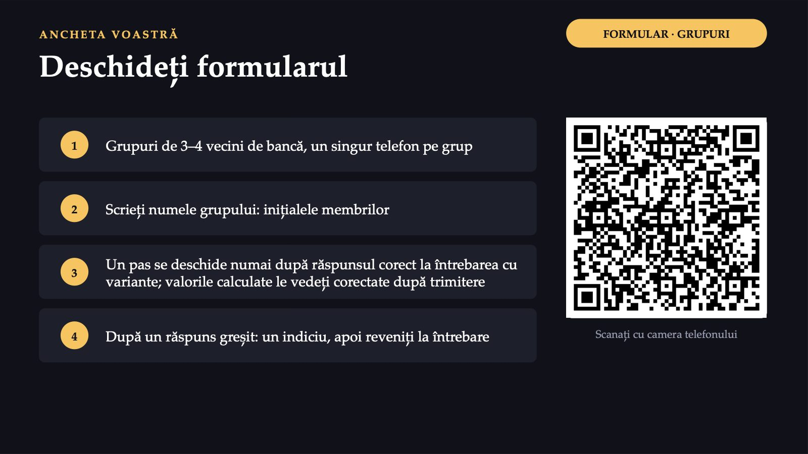
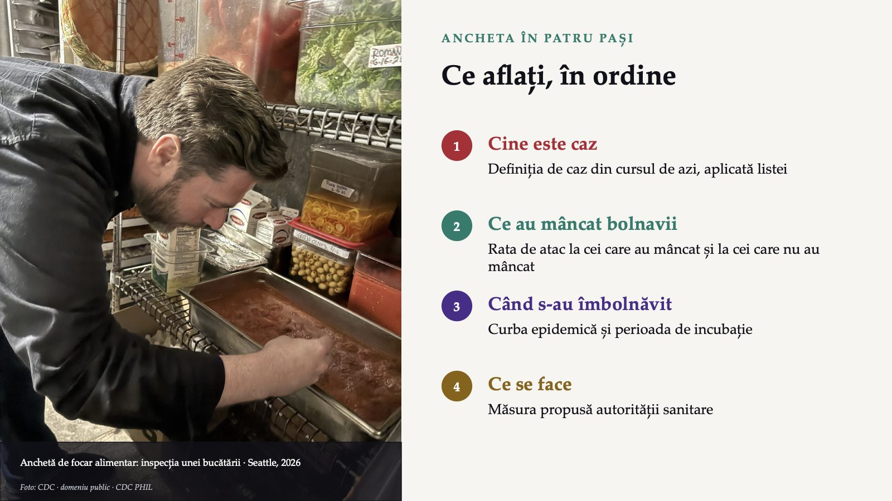
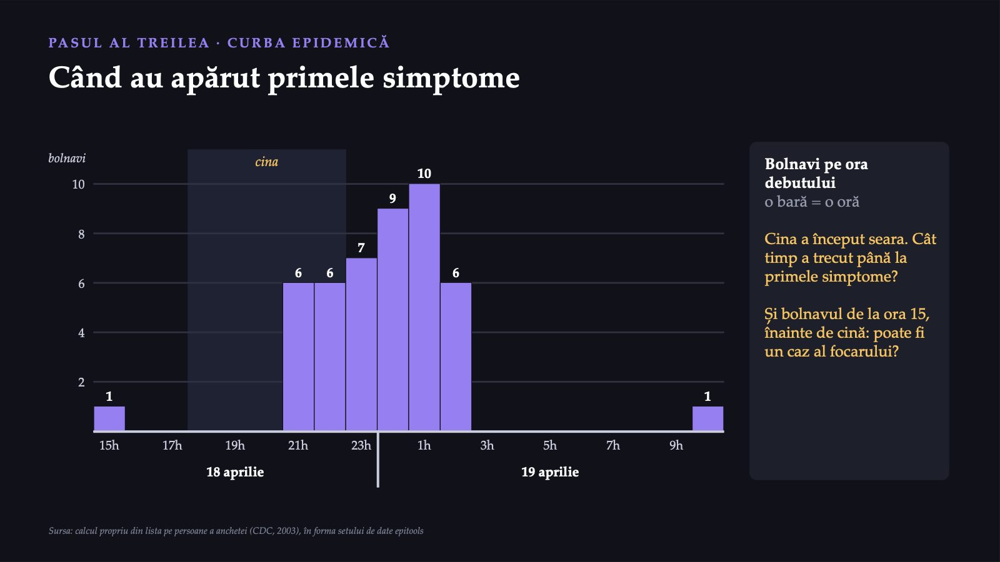
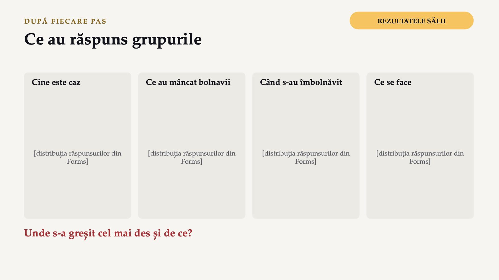
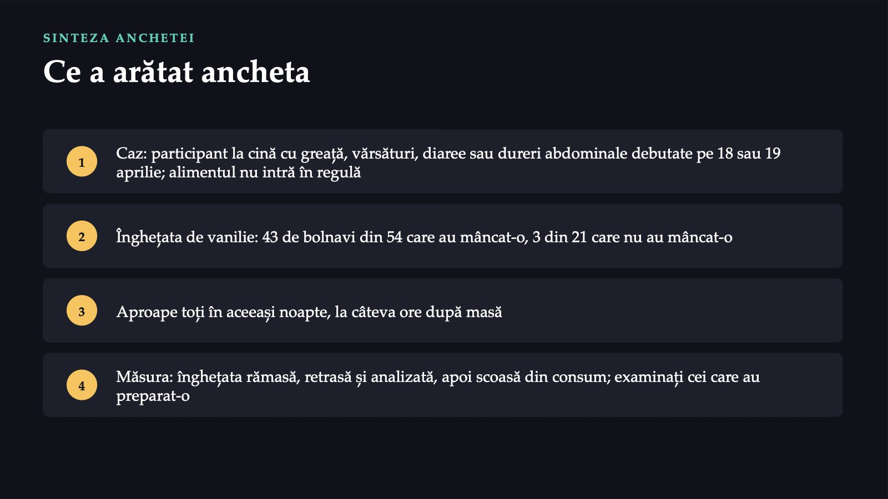
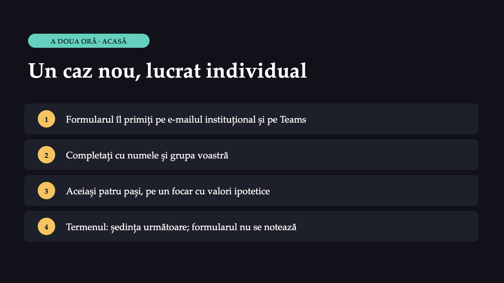
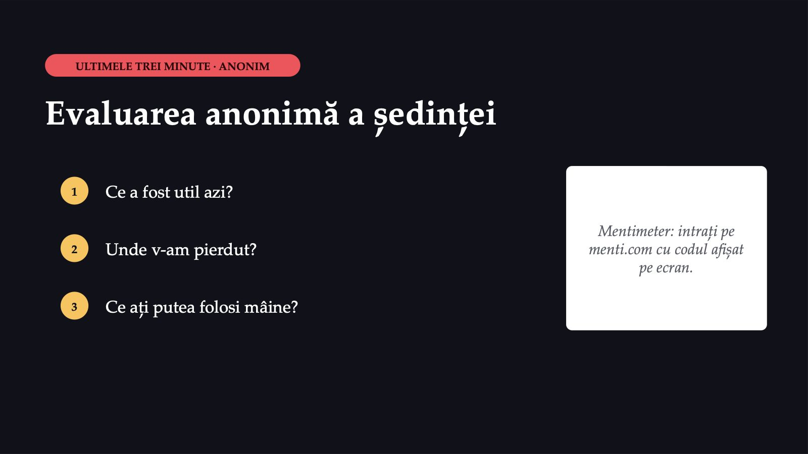

Cina de la Oswego

1 / 11Cina din subsolul bisericii
![CAZUL · NEW YORK, APRILIE 1940 Cina din subsolul bisericii A doua zi după cina bisericii, responsabilul sanitar local din Lycoming anunță un focar de boală digestivă acută. Toți bolnavii cunoscuți fuseseră la cină; familiile lor rămase acasă sunt sănătoase. 18 aprilie cina: ora 18–23, mâncare adusă de enoriași 75 din 80 participanți intervievați de dr. Rubin 24–30 de ore până la vindecare; niciun bolnav nu a declarat febră Greață, vărsături, diaree, dureri abdominale. Nicio probă de laborator de la bolnavi. Sursa: CDC, studiul de caz Oswego (2003)](diapozitive/LP01/002.jpg) 2 / 11
2 / 11Deschideți formularul

3 / 11Ce aflați, în ordine

4 / 11Cine a mâncat și cine s-a îmbolnăvit
![PASUL AL DOILEA · RATA DE ATAC Cine a mâncat și cine s-a îmbolnăvit Alimentul · Au mâncat: total · Au mâncat: bolnavi · Nu au mâncat: total · Nu au mâncat: bolnavi Șuncă la cuptor · 46 · 29 · 29 · 17 Salată de varză · 28 · 18 · 47 · 28 Înghețată de vanilie · 54 · 43 · 21 · 3 Înghețată de ciocolată · 47 · 25 · 27 · 20 Rata de atac = bolnavii din grup împărțiți la toți cei din grup. Comparați cele două rate ale fiecărui aliment. Sursa: calcul propriu din lista pe persoane a anchetei (CDC, 2003), în forma setului de date epitools; la înghețata de ciocolată, o persoană nu a răspuns](diapozitive/LP01/005.jpg) 5 / 11
5 / 11Când au apărut primele simptome

6 / 11Ce au răspuns grupurile

7 / 11Ce a arătat ancheta

8 / 11Ce a găsit laboratorul
![DEZNODĂMÂNTUL Ce a găsit laboratorul Înghețata de vanilie stafilococi aurii în număr mare; în cea de ciocolată, doar câțiva Aceeași lingură pentru ambele înghețate: explicația cea mai plauzibilă, după raport, pentru bolnavii fără vanilie Înghețata fusese preparată pe 17 aprilie și lăsată peste noapte în subsolul bisericii. Modul contaminării nu a putut fi lămurit. Bolnavul de dinaintea cinei: un copil care primise o porție de vanilie dimineața, în timp ce privea congelarea (incubația: 4 ore). Sursa: CDC, studiul de caz Oswego (2003), raportul anchetei](diapozitive/LP01/009.jpg) 9 / 11
9 / 11Un caz nou, lucrat individual

10 / 11Evaluarea anonimă a ședinței

11 / 11Săgeți sau spațiu: navigare · O: vedere de ansamblu · N: notele prezentatorului · F: ecran complet · Esc: închidere